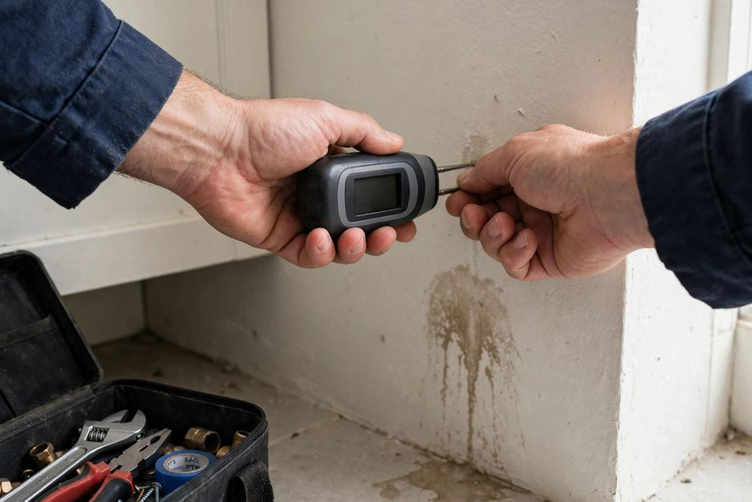
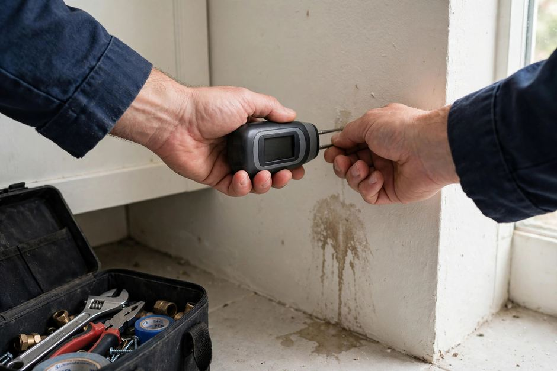

Leak Detection in Belleville, IL
Leak Detection Belleville IL: Finding Hidden Water Leaks
A hidden water leak can damage floors, walls, and belongings while the source stays out of sight. Hinkle Plumbing Company provides leak detection in Belleville, IL, using meter readings, listening checks, and thermal imaging to narrow the search before walls or floors are opened. Detection finds the leak; leak repair is the separate work that follows.
1610 W Main St, Belleville, IL 62220Monday through Friday, 8:00 AM to 4:30 PM. Closed Saturday and Sunday.Rated 5.0 from 3 Google reviews
What Is Included
Leak Detection Checks in Belleville, IL
Each visit starts with the signs reported by the caller and a walk through the areas where water, dampness, or sound points to a problem. Checks are chosen to suit the home, the pipe materials expected, and whether the leak is on a supply line, a drain, or a fixture connection.
Meter Reading Checks
The water meter is read with fixtures off to check whether water is moving through the supply system. A moving meter points to a supply-side leak, while a still meter points the search toward drains, fixtures, or appliances.
Listening Checks
Listening equipment is used at pipes, valves, and fixtures to check for the sound of water escaping under pressure. Sounds heard through walls or floors help narrow the area before any opening is made for repair work.
Thermal Imaging Checks
A thermal camera checks surface temperatures for patterns that can point to warm or cool water behind a surface. Results are read alongside other checks, since surface patterns alone do not prove the exact location of a leak.
Pressure Checks
Isolated sections of pipe are checked for pressure loss to test whether a section holds pressure as expected. A section that loses pressure is checked further, while a section that holds pressure can be set aside during the search.
Visible Pipe and Fixture Checks
Exposed pipes, shutoff valves, supply lines, and fixture connections are checked for dampness, staining, corrosion, and loose fittings. Visible signs often point to the source and help decide which hidden areas need further checks.
About Hinkle Plumbing Company
A Belleville Plumbing Company Focused on Finding Leaks
Hinkle Plumbing Company is based in Belleville, IL, and serves callers in Belleville who need the source of a water leak found before repair work is planned, with checks suited to the home and its pipes.
Belleville housing includes many older homes where pipe materials vary by era, so checks begin with what is expected for the home and what is visible on site. In older homes, expect to check galvanized steel supply lines, cast-iron drains, and clay sewer laterals, while later homes are expected to use copper or PEX supply lines with PVC drains. A leak under a concrete slab raises separate questions and is covered on the slab leak page, while detection on other lines follows the checks described on this page.

How we workImage of a meter reading check and visible pipes in a home.
How Detection Works
The Leak Detection Process
The steps flex with the condition of the job, but the sequence stays the same.
Describe the Signs
The caller describes what has been seen or heard, such as damp patches, sounds of running water, or a meter that moves with fixtures off. Those signs shape where checks begin and which areas are checked first.
Check the Meter and Fixtures
The meter and visible fixtures are checked to narrow the search to a supply line, a drain, or a fixture connection. This step helps separate a leak inside the home from water coming from another source.
Use Listening and Thermal Checks
Listening checks and thermal imaging are used in the areas where signs point to a leak. Each check adds a separate line of evidence, and areas are compared so the search stays focused on the most likely location.
Test Sections of Pipe
Where needed, sections of pipe are isolated and checked for pressure loss. Testing by section helps confirm whether a section is holding pressure or needs further checks before repair work is discussed.
Explain the Findings
The findings are explained, including the location found, the checks used, and what was ruled out. Repair work is a separate step, and the caller can consider the findings before deciding how to proceed.
Detection Methods
Methods Used to Find a Leak
No single check answers every leak question. Methods are combined so that meter readings, sounds, surface patterns, and pressure results can be compared before a location is named.
Water Meter Testing
With fixtures off, the meter is watched for movement that points to water passing through the supply system. Meter testing is a starting check that helps decide whether the search should focus on supply lines.
Acoustic Listening
Acoustic listening checks for sounds made by water escaping from a pipe under pressure. Sounds are compared across pipes, valves, and surfaces to narrow the area where further checks should be used.
Thermal Imaging
Thermal imaging shows surface temperature patterns that can suggest water behind a wall, floor, or ceiling. Patterns are checked against other evidence, since heating, sunlight, and stored items can also shape surface readings.
Pressure Testing
Pressure testing checks whether an isolated section of pipe holds pressure over the period of the test. Loss of pressure points to further checks in that section, while steady pressure points the search elsewhere.
Visual Inspection
Visible pipes, joints, valves, and fixture connections are inspected for dampness, staining, and corrosion. Visual signs can confirm a source directly or show where hidden checks should be used next.
Drain and Fixture Checks
Drains and fixtures are checked separately from supply lines, since a drain leak behaves differently from a pressurized supply leak. Separating the two helps keep the search on the right part of the system.
Checks before handoff
The work is checked before the visit ends, and what was done is reviewed with you.
Common Situations
When Leak Detection Is Used in Belleville
Leak detection is used when water is present but the source is not clear. The patterns below describe common calls without naming a home, a street, or an outcome for any single visit.

A Damp Patch With No Visible Source
A common call describes a damp patch on a wall or ceiling with no visible pipe nearby. The caller has checked visible fixtures and found nothing dripping, yet the patch remains and the area stays damp. Detection starts with meter and fixture checks to narrow the search to a supply line or a drain, followed by listening and thermal checks in the area of the patch. Findings point to the section of pipe to be repaired, and repair work follows as a separate step.
A Meter That Moves With Fixtures Off
A common call describes a water meter that moves even when fixtures in the home are off. The caller has looked for dripping faucets and running toilets and found nothing running, yet the meter reading changes. Detection checks the meter again with fixtures off, then checks visible supply lines and fixture connections before using listening checks and pressure checks on sections of pipe. The aim is to name the section where water is escaping so repair work can be planned for that section.
Signs of a Leak
Problems That Point to a Hidden Leak
Most calls fall into a few patterns. Knowing which pattern applies decides what the visit involves.
Damp Patches on Walls, Floors, or Ceilings
A damp patch that stays damp after visible fixtures have been checked can point to water escaping behind a surface. Detection checks the area around the patch to find whether the source is a supply line, a drain, or a fixture connection.
Sounds of Running Water With Fixtures Off
Hearing water moving when fixtures are off can point to a supply leak that is not visible. Listening checks at pipes and valves help narrow the area, and meter checks confirm whether water is passing through the supply system.
A Meter Reading That Changes With Fixtures Off
A meter that moves while fixtures are off points to water passing through the supply system. Detection repeats the meter check, then checks visible lines and tests sections of pipe to narrow the search to the section involved.
Staining, Swelling, or Musty Odor
Staining on a surface, swelling in flooring or trim, or a musty odor in a room can follow water escaping over time. Detection checks the affected area and nearby pipes to find the source before repair work is planned.
Cost Factors
What Shapes the Cost of Leak Detection
Cost depends on the scope of the search, not on a single set figure.
Size and Layout of the Search Area
A search across several rooms, floors, or levels involves more checks than a search in one room. The number of areas to be checked, and how pipes run through the home, shape the scope of the visit.
Access to Pipes and the Meter
Pipes behind walls, under floors, or in crawl spaces take more checking than exposed pipes that can be seen and reached directly. Access to the meter and to shutoff valves also shapes how the search is carried out.
Methods Needed to Narrow the Search
Some searches are settled with meter and visible checks, while others need listening, thermal, or pressure checks as well. Call Hinkle Plumbing Company at (618) 677-6556 to discuss the signs found and the scope of the checks needed.
Reviews from Google
What Customers Say on Google
★★★★★
“Very prompt and responsive, the worker was friendly and informative! Will use this company again!”
★★★★★
“Don did an outstanding job for me when I needed him and highly recommend his business”
★★★★★
“Rated 5.0 out of 5 across 3 Google reviews, all five stars.”

What is the difference between leak detection and leak repair?
Leak detection is the work of finding where water is escaping, using meter, listening, thermal, and pressure checks. Leak repair is the separate work of fixing the pipe, joint, valve, or fixture connection once the location is found. Detection comes first so repair work can be planned for the right section of pipe.
Do I need a permit for leak detection in Belleville, IL?
Permit rules depend on the work involved, and detection checks alone are diagnostic. The City of Belleville requires a permit before plumbing work begins (§152.05(A)); direct replacement of a toilet, sink, faucet, or other appliance is exempt, except hot water heaters require an electrical or gas permit (§152.05(B)(3)). Ask about permit needs when repair work is discussed.
What should I check before calling about a possible leak?
Note where dampness, staining, or sounds have been noticed, and whether fixtures were off when the signs appeared. Check visible pipes and fixture connections for dripping, and check whether the meter moves with fixtures off. Those notes help shape where detection checks begin during the visit.
How much does leak detection cost in Belleville, IL?
Cost depends on the size of the search area, access to pipes and the meter, and the methods needed to narrow the search. Each home differs, so a figure cannot be given without knowing the signs and the areas to be checked. Call Hinkle Plumbing Company at (618) 677-6556 to discuss the scope of the checks needed.
Related services
Related Plumbing Services

Leak Repair in Belleville, IL
Repair work for the pipe, joint, valve, or fixture connection found during detection, planned for the section involved.
Slab Leak in Belleville, IL
Leaks under a concrete slab, including a basement floor slab or slab-on-grade, with checks suited to that location.
Main Water Line Replacement in Belleville, IL
Replacement of the main water line where a leak, corrosion, or low pressure points to the line serving the home.Mon–Fri 8:00 AM–4:30 PM
Call Hinkle Plumbing Company About Leak Detection in Belleville, IL
Call (618) 677-6556 during business hours to describe the signs found and arrange a leak detection visit. Hours are Monday through Friday, 8:00 AM to 4:30 PM. Closed Saturday and Sunday. Hinkle Plumbing Company is based at 1610 W Main St, Belleville, IL 62220.
Talk with the local team
Request Leak Detection
Call (618) 677-6556 during office hours, Monday through Friday, 8:00 AM to 4:30 PM. Tell us what is happening and we will talk through the next step.